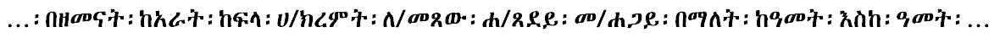

This document describes requirements for the layout and presentation of text in languages that use the Ethiopic script when they are used by Web standards and technologies, such as HTML, CSS, Mobile Web, Digital Publications, and Unicode.
This document describes the basic requirements for Ethiopic script layout and text support on the Web and in eBooks. These requirements provide information for Web technologies such as CSS, HTML and digital publications about how to support users of Ethiopic scripts. Currently the document focuses on Amharic and Tigrinya.
If you wish to make comments regarding this document, please raise them as github issues . Only send comments by email if you are unable to raise issues on github (see links below). All comments are welcome.
To make it easier to track comments, please raise separate issues or emails for each comment, and point to the section you are commenting on using a URL for the dated version of the document.
Introduction
Purpose of this Document
This document describes requirements of the layout and presentation of text in the Ethiopic script for use with Web standards and technologies, such as HTML, CSS, Mobile Web and Digital Publications (e.g. eBooks). In addition to the Ethiopian and Eritrean homelands, the script is widely used througout the diaspora of these two nations. Accordingly, requirements are gathered from stakeholders engaged in Ethiopic publishing from all regions.
The document does not describe implementations or issues related to specific technologies, such as CSS. Instead it describes the typographic requirements of Ethiopic in a technology-agnostic manner, so that the content remains evergreen and is equally relevant to all technologies that aim to represent Ethiopic text on the Web.
How this Docuemnt was Created
This document was created by the W3C Ethiopic Layout Task Force. The Task Force will discussed many issues and harmonized the requirements from user communities and solutions from technological experts.
The following types of experts will be involved in the creation of this document:
Ethiopic typography experts
Experts from the publishing industry representing the spectrum of traditional to modern layout practices
Academic experts with a focus on Ge'ez manuscripts and philogy
The Task Force will conduct a survey of the publishing industry to solicit input and identify the set of in-use layout styles. This document will then represent the normalized results of the industry survey which in turn becomes a basis for its validity and suitability to purpose. In the interim before to the survey results have been compiled and applied to this document, tentative specifications will be given based on the most-probable survey results anticipated from participating experts. Survey Pending notes will appear along side specification sections to denote their status.
Basic Principles for Document Development
Growing out of the XX element Ge'ez language syllabary for two millenia, Ethiopic in its present day form is a multilingual, and multinational, script comprised by YY symbols reprsenting: syllables, numerals, punctuation and tonal marks. Numerous linguistic, cultural, literary, historical and political issues surround the script and its utilization, all of which the authors strive to avoid discussing unless directly relevant to clarifying a given layout use case. The following principles are applied in the development of this document:
View publishers as the primary stakeholders.
Attempt a "90% solution" where the common and primary needs of publishers are addressed. Important but less widely used practices such as for Yaredic Zaima Notation will be addressed at a future time.
It does not cover every issue of Ethiopic typography, but only the import differences from the Western language systems.
The technical aspects of actual implementation are not covered by this document.
In order to help readers' understanding of how Ethiopic is used, typical real life examples are provided.
Text layout rules and recommendations for readable design are different things, however these two issues are difficult to discuss independently. In this document, these two aspects are carefully separated. The aesthetic design recommendations are mainly described using notes.
The main target of this document is common books. The authors' experiences are mainly related to common books, and the quality required for common books is the highest in the market. There are many kinds of books in the market, and the requirements are quite diverse. The task force has a lot of accumulated experience in requirements and solutions for Ethiopic text composition. Nonetheless, many issues, which have been discussed over a long period of time, are applicable for other kinds of publication.
In terms of frequency of use, the importance of magazines, technical manuals, and Web documents rates alongside common books. However, there are several characteristics in these publications, which are different from common books. These issues should be treated more fully in future documents.
In-Scope Publishing Eras
While Ethiopic documents can be characterized under a number of time periods, we discern only two gross eras in this document. Classical Ethiopic encompases the layout requirements found in the documents of the first printing presses and coming into fruition under the reign of Emperoror Haile Selassie. While not the focus of this document, "Classical Ethiopic" also encompasses handwritten manuscripts whose practices are present in early publishing. This era is characterized more by the influences of the Ge'ez tradition as embodied by the Ethiopian Orthodox Church with respect to spelling conventions, syntax and punctuation use, Ethiopic Wordspace and numeral system preference, less variation in layout practice which is likely the result of having fewer publishing houses in operation.
The Classical Ethiopic era is followed by the Modern Ethiopic spanning from the post-Imperial period up until the present day. Modern Ethiopic practices are characterized by looser spelling practices, the preference change toward whitespace and western numerals, more variation in layout styles
and in some cases limitations imposed by desktop publishing software designed for Western markets.
The focus of this document is on the Modern Ethiopic layout conventions with distinctions pertaining to Classical Ethiopic noted when known. An exception will be a complication that the authors hope to resolve found in Classical era documents where Ethiopic Wordspace interplays with Whitespace in a number of contexts.
Discuss any considerations for when foreign scripts (Latin, Arabic, etc) are used with Ethiopic text. Relative character heights and weights.
Relative Character Heights
Relative Typeface Weights
Baseline Alignment
Latin Punctuation with Ethiopic
Discuss Latin/Western punctuation adopted for Ethiopic writing. Ethiopicized (typeface stylized) punctuation. Reference the ES-781:2002 punctuation inventory.
Ethiopicized Punctuation
Latin Punctuation Inventory
as per ES-781:2002
1234567890 ? ! ¡ . / () [] {} < = > \ # % & _ - + ± × ÷ ‘ ’ “ ” ‹ › « »
Common punctuation that is missing from the standard: $ : , € @ … (colon used in time)
Optical Balancing
weight of encompassing punctuation around inline Latin text match latin weight, e.g. []()""''«»‹›
Ethiopic Wordspace at Latin Boundaries
letter or punctuation boundary, Consider example of wordspace follow an abbreviation which is terminated with a dot.
Lines and Paragraphs
Topic Keywords: Line composition rules, Punctuations, Mixed script text, Paragraph adjustment, Directionality and bidi, Tab setting, Alignment, Justification, Hyphenation, Word/Sentence boundaries, Special cases (e.g. poetry, math, vertical, etc.)
Hyphenation
A word is split at a location where the user would not be able to infer from context whether one or two words appears across lines. I.E. a split should not occur at the boundary of a compound word.
When whitespace is the word delimiter, the hyphen symbol should be applied when a word is split over lines.
Numbers are not split over lines.
Words of a single syllable are not split over lines.
Words of two letters are not split over lines.
Only letters, numbers, or opening punctuation may start a new line.
Words are split along a syllbale boundary.
A consonant cluster may not be split.
Word Boundaries
Line Breaking
Formatting of Ethiopic Wordspace
Rules of Formatting the Ethiopic Wordspace-Punctuation Boundary
[image samples needed]
Rules of Applying Whitespace in Ethiopic Text
[image samples needed]
Justification
Since the arrival of the printing press to Ethiopia in 1863 (Pankhurst, 1998), full justification of Ethiopic has been a common typesetting practice in Ethiopian, and later Eritrean, publishing houses. Earlier, Ethiopic justification rules are a feature of Hiob Ludolf’s Historia Æthiopica which is noted as the first use of movable type for Ethiopic script (Ludolf, 1681). Prior to letterpress typography, calligraphic manuscripts rendered on parchment also featured full, or approximately full, justification. Though the latter likely reflects the scribe’s desire not to waste a millimeter of available lateral writing space.
Two predominant forms of Ethiopic Justification developed and would be of value to the present day user community. Each form in turn has two sub-modes that govern spacing following an Ethiopic Full Stop. Both forms and sub-modes are discussed here.
Ethiopic Justification in Historia Æthiopica (Ludolf, 1681)
Justification with Left Bounded Wordspace and Punctuation
In keeping with line justification for Latin script , the non-printed or “white space” between words is treated as stretchable. The width of the space symbol itself will be elongated to some aesthetic width value that may vary from space symbol to space symbol across a printed line. In Ethiopic justification , the white space between the Ethiopic word separator and the words it separates is likewise allowed to stretch. This stretching of white space may be either symmetrical (“centered”) or asymmetrical but in the latter case space stretching is always between the right side of the separator and the following word –referred to here as “left bounded”.
In “left bounded” justification the word separator, which may be either a punctuation symbol or U+1361 ETHIOPIC WORDSPACE [፡], appears to adhere to the word to the left as if it were its final character.
Ethiopic justification in left bounded style (Erikson, 1921 (1913 EC))
Justification with Centered Wordspace and Punctuation
In the second major form of Ethiopic justification the white space around word separators is stretched equally on both the left and right sides; giving the appearance of the separator being centered between the words it divides. depicts the white space stretching in both forms of justification using Ethiopic Wordspace as an example, though the stretching rules apply equally to Ethiopic punctuation as well.
Ethiopic justification in centered style (Gubenya, 1973 (1966 EC)).
To further illustrate the justification spacing applied to both Ethiopic punctuation and wordspace, presents white space stretching from the point of view of the symbol’s typographic bounding box. Here the “design white space”, the space between the visible symbol and the box border, is itself stretched as needed to meet line justification:
Depiction of white space around Ethiopic wordspace for three modes of text justification.
Spacing Threshold Following Full Stop
In the regular mode of Ethiopic justification (both forms) U+1362 ETHIOPIC FULL STOP [።] will be treated equally with all other punctuation symbols. In a second mode, the Ethiopic full stop will have special spacing rules applied to it whereby more separation space is allowed following the symbol and the start of the next word. In a sense, the right side space of the full stop is “more elastic” than in the regular mode. The elasticity rule and the visual effect are similar to that of the final line of a fully justified paragraph in Western text. When the final line of a paragraph of Latin script crosses a certain horizontal threshold, the line will become fully justified. Below that threshold the line will appear left aligned. The same rule appears to be applied to the Ethiopic full stop but on any line of the paragraph. An illustration of this sub-mode is depicted in the following:
Shortcomings Found in Electronic Typesetting Systems
To date, computer software that typesets text has a pplied justification rules for white space stretching that were designed to meet publishing requirements in the Western world. When the same rules are applied to Ethiopic text, the results are unsatisfactory as they do not meet user expectations. Largely responsible for the formatting dissonance when Western justification is applied to Ethiopic text, is the absence of a white space symbol in the writing system. There is no explicit white space symbol (in classic Ethiopic writing) to be “stretched”.
Formatting algorithms will then process U+1361 ETHIOPIC WORDSPACE [፡] as a punctuation symbol where word binding rules, rather than word spacing rules, will be applied. While still stretchable, “white space” in the Ethiopic wordspace is implicit rather than explicit. For a complete solution, software will ultimately need to be enhanced to stretch implicit space as required. Reclassifying the Ethiopic wordspace as a “Zs” symbol is expected to help alleviate justification issues and clears the way for software firms to implement comprehensive support for Ethiopic justification. Since the Ethiopic wordspace interferes with justification in present day software, users may opt not to use it or may “pad” wordspace and Ethiopic punctuation with explicit white space to obtain the formatting desired. The following samples depict formatting of Kidane Wolde Kifle’s seminal work Maṣḥafa Sawāsew with a popular word processor (Kifle, 1955 (1948 EC)) under the limitations of Western spacing rules justification.
Full Justification Sample from Maṣḥafa Sawāsew, Page 65 (Kifle, 1955 (1948 EC))The sample from the previous figure with a 12 point font and fully justified by Microsoft Word 2010 within a 6.5 inch margin with line-breaking rules applied. No spaces (U+0020 ) in sample. The sample from the earlier figure with space (U+0020) replacing Ethiopic wordspace. Space characters have additionally been added following Ethiopic punctuation.
In digital documents such as in web pages and eBooks, it is recommended that the appearance of either U+0020 SPACE [ ] or U+1361 ETHIOPIC WORDSPACE [፡] be configurable as a user preference. An easy to access “space” toggle button would enhance a viewing application’s usability.
Ethiopic Semi-Justification
“Semi-justification” is mentioned here as a historical note and to provide an interpretation of formatting observed in hand written manuscripts. In “semi-justification” the line spacing rules of either mode of Ethiopic justification has been used, however, the text does not necessarily align perfectly flush with the right side margin. This practice is depicted in the following sample (Brita, 2012):
In recent decades some communities have adopted a practice of employing the wordspace symbol as a comma when U+0020 SPACE [ ] is used as the word separator. The interpretation of the symbol is then dependent on the context of the writing convention in use by the author. Accordingly, an application user setting could be offered to set the symbol context.
An alternative view point on this practice is that U+1363 ETHIOPIC COMMA [፣] is in fact in use by these user communities; however its glyph has decayed whereby the line segment is lost and so it visually coincides with U+1361 ETHIOPIC WORDSPACE [፡]. Under this perspective, a simple solution would be modify an Ethiopic font for these users (perhaps adding an alternative glyph in an OpenType stylistic set) where the Ethiopic comma character address and semantics remain intact though the visual form has been tailored to meet aesthetic needs.
Ethiopic Wordspace in the context of co mma (Abubeker, 1987 ( 1979 EC))
What are the preferred suffix symbols? How much, if any, white space follows the suffix? space, punctuation space, thin space, hair space, etc? produce comparative examples / ፦ . )
Inline Lists
How much space after marker? Is the space after marker the different when Ethiopic wordspace is in use?
 [Update image to show with and without wordspace]
The Unicode standard encodes Ethiopic syllables for many languages using Ethiopic script past and present.
Alphabetic lists are commonplace in Ethiopic literature, but will conform to the letter inventory of the language of the surrounding content.
The alphabetical style lists specified here do not encompass all languages using Ethiopic, but only those with a demonstrated requirement as found in corpus or stakeholder input.
The አበገደ ordering is potentially desirable to any language using the Ethiopic syllabary.
The ordering is less likely to be found in the writing traditions of languages that have a written tradition of under a hundred years.
The language specific orders orders shown here are those found in utilization in corpus (give references.
paragraph continuation at end of list - how much space after final list item? is this common in classical style?
Pages
Topic Keywords: Basic common templates, Page elements, Page-level directionality, Bidirectional characteristics, Arrangement of elements, Text columns, Header, Footer, Illustrations, Tables, Page numbers, Margins, Positioning and arrangement of content, Pagination rules, Specimens and examples.
Document
Topic Keywords: Distinguished requirements: book/ebook/page, Inter-page spacing, first and last pages, TOC and lists, indexes, appendices (e.g. bibliographies, glossaries), endnotes.
Other
Literature best practices of interest for the survey that are not know to be layout topics
Abbreviation formation
Discuss patterns and terminal punctuation. Note language specific conventions.
Ordinal Notation
Superscript or not. Note language specific conventions.
Ethiopic Comma Usage
Rules of usage for the two Ethiopic commas. Note language specific conventions.
Glossary
Term
Amharic
Tigrinya
Definition
text block
aslkjafs
lkjlasd
The part of the page normally occupied by text.
justify
aslkjasd
fqlkj
To adjust the length of the line so that it is flush left and right on the measure.
measure
oqepo
ooos
The standard length of th eline; ie. column width or width of the overall textblock.
Acknowledgements
Special thanks to the following people who contributed to this document (contributors' names listed in in alphabetic order).